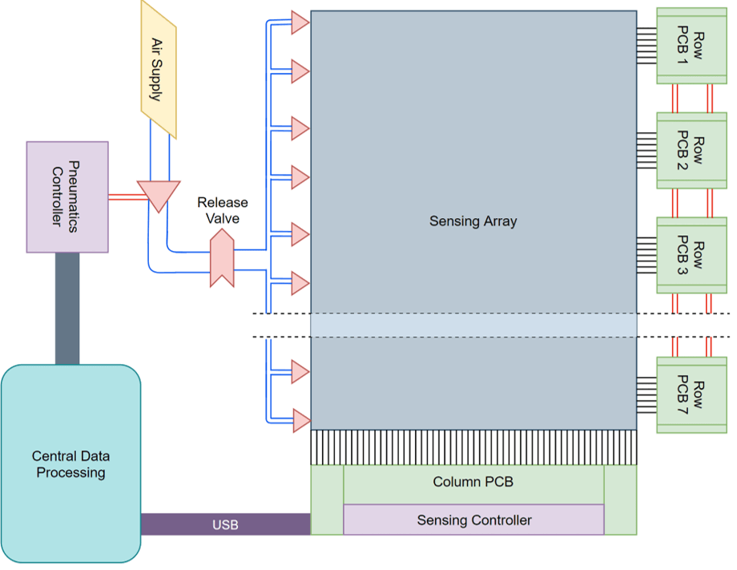
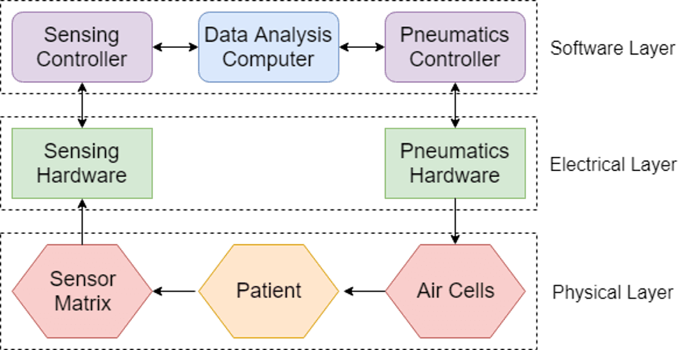

Problem
A pressure injury is an illness of the skin and underlying tissue due to restricted blood flow as a result of immobility. Every year in the United States, pressure injuries kill 60,000 people and cost the healthcare system over 11 billion dollars. Atlas Medical aims to postpone the onset and mitigate the existence of pressure injuries in hospitalized, bedridden patients by automating patient adjustment.
Technology Overview
Our technology consists of a full-scale pressure sensing array, an intelligent pneumatics system, and novel data processing algorithms.
Data flow
The pressure measurement system and pneumatics control system combine to form a true Mechatronics system:
Electronics
To facilitate the design of a sensor which contains over 5000 sense elements two custom PCBs were designed and fabricated: